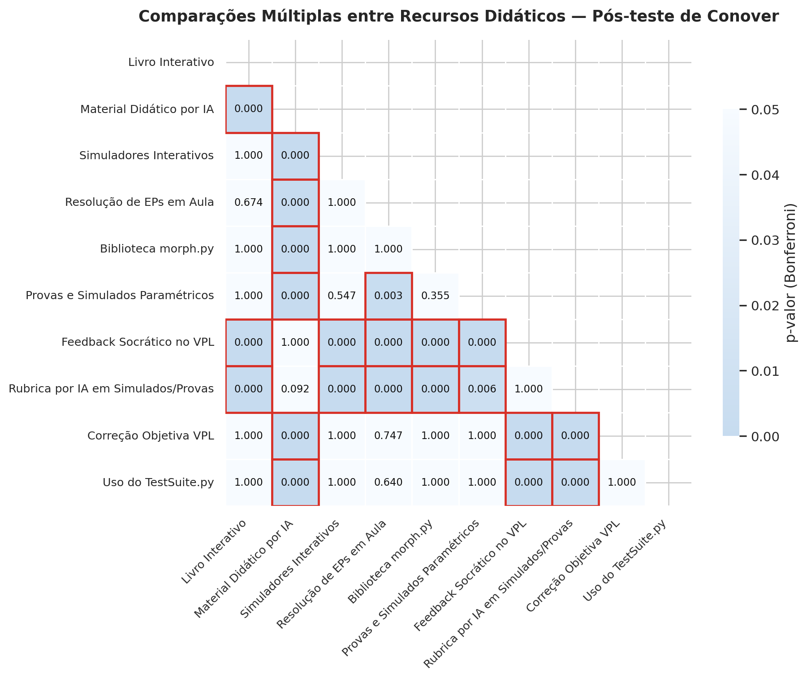
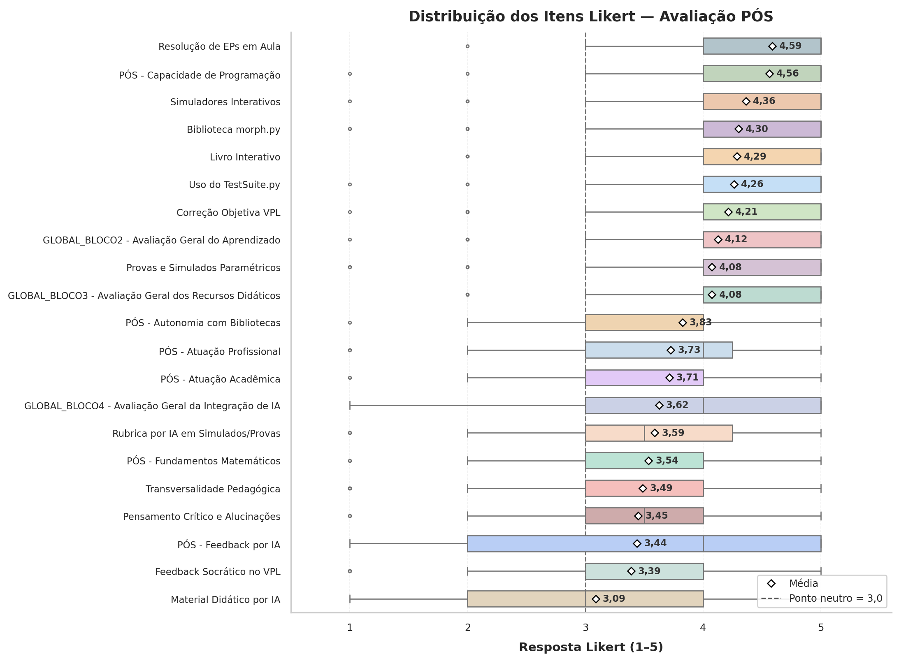
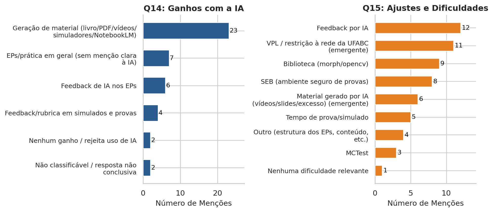
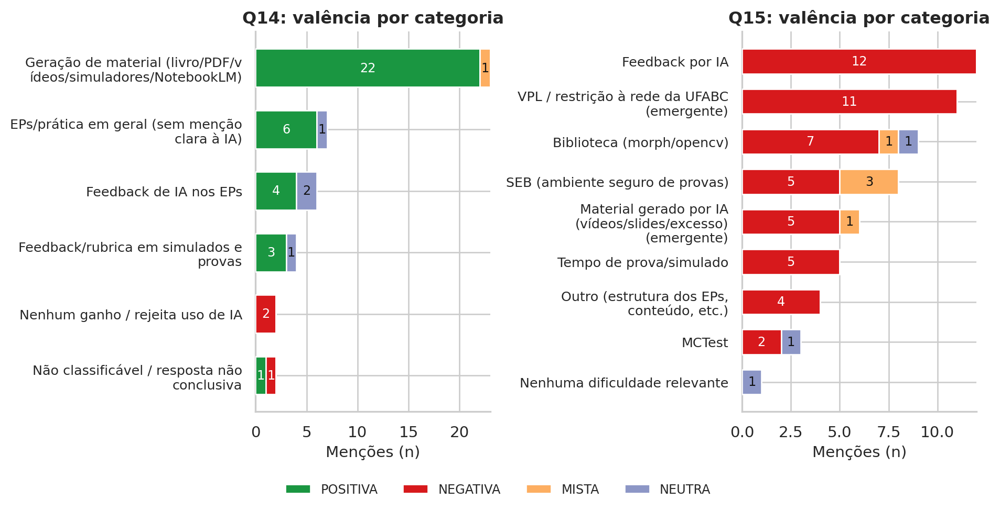

| Turma | PRÉ (n) | PÓS (n) |
|---|---|---|
| DA1 | 39 | 39 |
| DA2 | 46 | 30 |
| MCC | 19 | 11 |
| Total | 104 | 80 |
Apêndice F — Análise de Percepção e Avaliação Didática: PDI-VC 2026.2


Este apêndice apresenta uma análise quantitativa e qualitativa, agregada e não identificável, da percepção dos estudantes sobre a experiência pedagógica na disciplina de Processamento Digital de Imagens e Visão Computacional (PDI-VC), oferecida no segundo quadrimestre de 2026. A análise contempla avaliações estruturadas, comparações entre os questionários PRÉ e PÓS, de participação voluntária, e manifestações espontâneas registradas nas questões abertas.
Os resultados foram organizados de modo a preservar a confidencialidade dos participantes. Não são divulgados nomes, endereços eletrônicos, respostas individualizadas ou quaisquer outros elementos que permitam a identificação direta ou indireta dos estudantes.
NotaProteção da confidencialidade, tratamento dos dados e reprodutibilidade
As análises foram realizadas exclusivamente sobre dados agregados ou anonimizados, utilizados para a avaliação e análise da experiência pedagógica. Os resultados são apresentados coletivamente, sem associação entre respostas e identidades individuais.
As tabelas, estatísticas e gráficos foram gerados de forma automática e reprodutível a partir dos dados utilizados na análise. O notebook Colab, disponibilizado pelo ícone no canto superior esquerdo, documenta os procedimentos computacionais empregados, incluindo o processamento dos dados, as transformações realizadas e a geração dos resultados apresentados neste apêndice.
Os dados brutos contendo informações potencialmente identificáveis não são publicados, incorporados ao material de divulgação ou disponibilizados por meio do notebook. Da mesma forma, respostas individuais não são apresentadas de modo que possam ser associadas a participantes específicos.
Eventuais materiais necessários à auditoria metodológica permanecem sob guarda do responsável pela análise e poderão ser disponibilizados, quando cabível, em condições compatíveis com as exigências éticas aplicáveis e sem exposição de dados pessoais ou identificáveis.
Para a análise longitudinal, quando necessária, foi utilizado um identificador exclusivamente para o pareamento entre as respostas PRÉ e PÓS. Esse identificador não é divulgado. Após a conclusão dos procedimentos que dependem do pareamento, os resultados são apresentados apenas de forma agregada, preservando a confidencialidade dos participantes.
F.1 Caracterização da Amostra e Metodologia de Coleta
A coleta de dados ocorreu de forma voluntária em dois momentos do quadrimestre. O questionário PRÉ-curso, aplicado na primeira semana de aula, caracterizou o perfil dos estudantes e suas percepções iniciais. O questionário PÓS-curso, aplicado ao final do quadrimestre, juntamente com a prova final, avaliou a experiência na disciplina após a utilização dos recursos didáticos e das estratégias analisadas neste apêndice. A distribuição dos respondentes entre as três turmas é apresentada na Tabela F.1.
NotaNota metodológica
Os testes estatísticos identificam diferenças e associações, mas não estabelecem relações causais. Portanto, diferenças entre recursos que utilizaram ou não IA não devem ser atribuídas isoladamente à tecnologia, pois esses recursos também diferem quanto à finalidade pedagógica, ao formato, ao nível de interação e ao momento de utilização.
Foram obtidas 104 respostas no PRÉ e 80 no PÓS. A partir das informações fornecidas voluntariamente pelos estudantes para possibilitar a identificação entre os dois momentos, foram identificados 15 estudantes que responderam a ambos os questionários, constituindo a amostra pareada utilizada na análise da evolução individual.
As turmas DA1 e DA2 correspondem à graduação, oferecida no período matutino, enquanto a MCC corresponde à pós-graduação, oferecida no período vespertino. Entre o PRÉ e o PÓS, o número de respostas manteve-se em 39 na DA1, enquanto diminuiu de 46 para 30 na DA2 e de 19 para 11 na MCC. Assim, a redução da participação concentrou-se nas turmas DA2 e MCC, enquanto a DA1 permaneceu estável.
Considerando a natureza ordinal das escalas Likert de cinco pontos, foram empregados testes estatísticos não paramétricos. O teste de Mann–Whitney U (Mann; Whitney, 1947) foi utilizado para comparações entre amostras independentes; o teste de Kruskal–Wallis (Kruskal; Wallis, 1952), para comparações entre mais de dois grupos independentes; e o teste de Friedman (Friedman, 1937), para comparar diferentes recursos avaliados pelos mesmos estudantes. Na comparação pareada entre PRÉ e PÓS, empregou-se o teste de Wilcoxon (Wilcoxon, 1945).
Como complemento aos testes de significância, foram considerados tamanhos de efeito, correlações de Spearman, consistência interna pelo \(\alpha\) de Cronbach e preferências declaradas, permitindo caracterizar os resultados sob diferentes perspectivas analíticas.
F.2 Itens do questionário PÓS
O questionário PÓS foi estruturado em cinco blocos. O Bloco 1 reúne a identificação opcional do estudante e a seleção de uma das três turmas. O Bloco 2, apresentado na Tabela F.2, aborda a autopercepção de aprendizado e desempenho. O Bloco 3, apresentado na Tabela F.3 (Q08) e na Tabela F.4 (Q09), avalia os recursos didáticos. O Bloco 4, apresentado na Tabela F.5, investiga a percepção sobre a integração da Inteligência Artificial (IA) ao processo de ensino e aprendizagem. Por fim, o Bloco 5, apresentado na Tabela F.6, reúne duas questões abertas.
Os itens avaliativos dos Blocos 2, 3 e 4 utilizam uma escala Likert de cinco pontos: 1 = Discordo totalmente; 2 = Discordo; 3 = Indiferente; 4 = Concordo; e 5 = Concordo totalmente. A questão Q09, pertencente ao Bloco 3, adota formato distinto, solicitando a seleção de exatamente quatro recursos considerados mais eficazes para a aprendizagem pelo estudante.
F.2.1 Itens do Bloco 2 — Autopercepção de Aprendizado e Desempenho
A Tabela F.2 apresenta os sete itens do Bloco 2, que avaliam a autopercepção dos estudantes sobre o aprendizado e o desempenho ao final da disciplina. Os seis primeiros itens abrangem capacidade de programação, aplicação dos conhecimentos em outras disciplinas e na atuação profissional, fundamentos matemáticos, autonomia no uso de bibliotecas e percepção sobre o feedback por IA. Esses itens possuem correspondência com questões do questionário PRÉ e serão analisados de forma pareada na seção seguinte, permitindo avaliar a evolução das percepções individuais. O item Q07 apresenta uma avaliação global da evolução dos conhecimentos teóricos e práticos em PDI-VC ao longo da disciplina.
| Item | Enunciado aplicado |
|---|---|
Q01 |
PÓS - Capacidade de Programação: Atualmente, consigo resolver problemas computacionais básicos usando programação. |
Q02 |
PÓS - Atuação Acadêmica: Os conhecimentos desenvolvidos nesta disciplina têm me ajudado na minha atuação acadêmica em outras disciplinas. |
Q03 |
PÓS - Atuação Profissional: Os conhecimentos desenvolvidos nesta disciplina serão úteis para a minha atuação profissional |
Q04 |
PÓS - Fundamentos Matemáticos: Atualmente, considero que minha base em Álgebra Linear e Cálculo (conceitos usados em PDI) é muito boa. |
Q05 |
PÓS - Autonomia com Bibliotecas: Atualmente, sinto que tenho boa autonomia para utilizar bibliotecas de processamento de dados/imagens (ex: OpenCV, NumPy, Matplotlib, morph.py). |
Q06 |
PÓS - Feedback por IA: Atualmente, considero útil o feedback automático de código gerado por IA. |
Q07 |
GLOBAL_BLOCO2 - Avaliação Geral do Aprendizado: De forma geral, considero que o meu nível de conhecimento teórico e prático na área de PDI-VC evoluiu significativamente ao longo desta disciplina. |
F.2.2 Itens do Bloco 3 — Recursos Didáticos
O Bloco 3 avalia os recursos didáticos utilizados na disciplina. É composto por dez itens de avaliação (Q08_01–Q08_10), apresentados na Tabela F.3; uma questão sobre o acesso ao VPL (Q08_11); uma questão de preferência pelos recursos (Q09); e uma avaliação global (Q10).
| Item | Enunciado aplicado |
|---|---|
Q08_01 |
Livro Interativo: O uso do Livro Interativo (HTML/IPYNB/PDF) com simuladores e teoria integrada contribuiu significativamente para o meu aprendizado. |
Q08_02 |
Material Didático por IA: Os vídeos curtos (~7 min) e os slides (~12 slides) produzidos via Gemini Notebook ajudaram a introduzir e sintetizar o conteúdo antes do início da aula prática no Colab |
Q08_03 |
Simuladores Interativos: A manipulação visual de parâmetros em tempo real nos simuladores interativos (no HTML/Colab) facilitou a compreensão dos algoritmos. |
Q08_04 |
Resolução de EPs em Aula: A resolução acompanhada dos Exercícios de Programação (EPs) durante o horário de aula foi fundamental para o meu desempenho prático. |
Q08_05 |
Biblioteca morph.py: O uso da biblioteca didática morph.py (com implementações didáticas como mm.dil0 e otimizadas) tornou o código dos algoritmos mais transparente e compreensível. |
Q08_06 |
Provas e Simulados Paramétricos: As avaliações parametrizadas pelo MCTest e aplicadas via SEB (com questões individuais) foram eficazes para avaliar meu aprendizado de forma justa. |
Q08_07 |
Feedback Socrático no VPL: O feedback qualitativo/socrático gerado por IA ao pedir avaliação do código nos EPs do VPL/Moodle ajudou a identificar e corrigir erros na minha lógica. |
Q08_08 |
Rubrica por IA em Simulados/Provas: O relatório enviado por e-mail com a rubrica detalhada por IA e o resumo comparativo agregou valor ao meu processo de revisão das provas e simulados. |
Q08_09 |
Correção Objetiva VPL: A validação automática objetiva por casos de teste no VPL/Moodle deu um retorno rápido e claro sobre o funcionamento do código. |
Q08_10 |
Uso do TestSuite.py: O testsuite.py facilitou testar meus EPs no Colab antes de submeter no VPL. |
Q08_11 |
VPL só na UFABC: O bloqueio de acesso ao VPL fora da rede da UFABC dificultou meus estudos. |
Q09 |
Ranking de Preferência: Escolha até 4 recursos que considerou MAIS EFICAZES no seu processo de estudo: |
Q10 |
GLOBAL_BLOCO3 - Avaliação Geral dos Recursos Didáticos: Em conjunto, o ecossistema de recursos metodológicos oferecidos nesta disciplina (livro interativo, materiais multimídia por IA, simuladores, biblioteca didática e avaliações) foi altamente eficaz para o meu aprendizado. |
A questão Q09 utilizou um formato de seleção de preferência, no qual cada estudante deveria selecionar exatamente quatro recursos considerados mais eficazes para seu processo de estudo. A questão apresentou dez opções de recursos, relacionadas na Tabela F.4.
Q09 — Ranking agregado por frequência de seleção.
| Item | Recurso |
|---|---|
Q09_01 |
Gemini Audio/Visual: Material didático audiovisual gerado por IA (Vídeos e Slides do Gemini Notebook) |
Q09_02 |
Simuladores: Simuladores interativos (manipulação de parâmetros) |
Q09_03 |
EPs em Aula: Resolução dos Exercícios de Programação (EPs) em sala de aula |
Q09_04 |
Livro Interativo: Livro interativo no formato HTML / Colab |
Q09_05 |
morph.py: Biblioteca didática morph.py |
Q09_06 |
IA Feedback VPL: Feedback socrático por IA a cada submissão de código no VPL/Moodle |
Q09_07 |
IA Rubrica Provas: Feedback por e-mail com rubrica de avaliação qualitativa gerada por IA nos Simulados/Provas |
Q09_08 |
SEB Simulados: Simulados quinzenais em laboratório (SEB) |
Q09_09 |
VPL Casos Teste: Validação objetiva por casos de teste no VPL |
Q09_10 |
TestSuite.py: Uso do testsuite.py no Colab para testar EPs localmente |
F.2.3 Itens do Bloco 4 — Avaliação Específica do Uso Transversal da Inteligência Artificial
Os itens Q11–Q13, apresentados na Tabela F.5, avaliam a percepção dos estudantes sobre a integração transversal da Inteligência Artificial (IA) no processo de ensino e aprendizagem. Como utilizam a mesma escala Likert de cinco pontos descrita anteriormente, esses itens compõem, juntamente com os demais itens ordinais, a síntese dos 21 itens Likert apresentada ao final deste apêndice.
O item Q08_11 e a questão Q09, pertencentes ao Bloco 3, não integram essa síntese, pois apresentam formatos e finalidades distintos da avaliação ordinal dos recursos didáticos. O Q08_11 investiga uma dificuldade específica relacionada ao acesso ao VPL, enquanto Q09 utiliza seleção de exatamente quatro recursos, sem estabelecer ordenação entre as alternativas.
| Item | Enunciado aplicado |
|---|---|
Q11 |
Pensamento Crítico e Alucinações: Perceber eventuais limitações ou imprecisões nas explicações da IA (no feedback ou materiais) estimulou meu senso crítico sobre a correção do código. |
Q12 |
Transversalidade Pedagógica: Recomendo que essa abordagem integrada de IA (produção de material + feedback socrático no VPL + rubrica qualitativa em provas) seja adotada em outras disciplinas. |
Q13 |
GLOBAL_BLOCO4 - Avaliação Geral da Integração de IA: O uso transversal e transparente de Inteligência Artificial ao longo da disciplina agregou valor significativo à minha experiência de aprendizado. |
F.2.4 Bloco 5 — Questões Abertas
O Bloco 5 reúne duas questões abertas e opcionais, apresentadas na Tabela F.6, destinadas a complementar a avaliação quantitativa com feedback qualitativo sobre a experiência dos estudantes com a metodologia da disciplina e, especificamente, sobre o uso da Inteligência Artificial (IA) no processo de ensino e aprendizagem.
| Item | Enunciado aplicado |
|---|---|
Q14 |
Maior contribuição da IA: Dentre os usos da IA nesta disciplina (geração de material, feedback socrático nos EPs, rubrica nos simulados/provas), qual trouxe o maior ganho para o seu aprendizado? Por quê? |
Q15 |
Dificuldades e ajustes metodológicos: Qual elemento da metodologia (SEB, MCTest, tempo de prova, feedback por IA, biblioteca) apresentou maior dificuldade ou precisará de ajustes nas próximas ofertas? |
As questões Q14 e Q15 não utilizaram escala ordinal nem alternativas predefinidas. As respostas, de caráter aberto e opcional, permitiram aos estudantes registrar livremente suas percepções, justificativas, dificuldades e sugestões de melhoria. Por esse motivo, esses itens não integram as análises estatísticas baseadas nas questões Likert e são examinados separadamente por meio de codificação temática e classificação de valência, apresentadas nas seções seguintes.
F.3 Perfil acadêmico dos participantes
A interpretação dos resultados deve considerar o perfil acadêmico dos participantes, especialmente a composição da amostra de graduação, formada majoritariamente por estudantes em etapas avançadas da formação. No questionário PRÉ, os estudantes indicaram os cursos que estavam cursando ou pretendiam cursar após o Bacharelado Interdisciplinar. Como era permitida a seleção de mais de uma opção, os quantitativos não são mutuamente exclusivos, conforme apresentado na Tabela F.7.
| Curso/área indicada | Estudantes (n) | Percentual* |
|---|---|---|
| Ciência da Computação | 88 | 84,6% |
| Ciência de Dados | 30 | 28,8% |
| Instrumentação | 8 | 7,7% |
| Automação e Robótica | 8 | 7,7% |
| Matemática | 6 | 5,8% |
| Informação | 6 | 5,8% |
| Biomédica | 5 | 4,8% |
| Física | 4 | 3,8% |
| Neurociência | 3 | 2,9% |
| Gestão | 2 | 1,9% |
| Outros (1 estudante cada): Aeroespacial, Ambiental e Urbana, Biotecnologia, Ciências Atuariais, Ciências Biológicas, Ciências atuariais, Energia, Filosofia, Pós em Ciência da Computação, formado em 1997 | 10 | 1,0% cada |
No questionário PRÉ, 88 estudantes indicaram Ciência da Computação e 30, Ciência de Dados como cursos que estavam cursando ou pretendiam cursar após o Bacharelado Interdisciplinar. Essa composição, apresentada na Tabela F.7, caracteriza uma amostra de graduação predominantemente vinculada à Computação e à Ciência de Dados.
Esse perfil ajuda a contextualizar a elevada autopercepção de capacidade de programação (Q01) observada no PRÉ e no PÓS, analisada nas subseções seguintes. Entretanto, Processamento Digital de Imagens (PDI) não constitui componente obrigatório da matriz curricular de todos esses cursos; portanto, a formação acadêmica não permite presumir experiência prévia específica nessa área.
Na pós-graduação, observa-se maior diversidade nas formações de origem, incluindo Física, Engenharia Biomédica, Matemática, Ciências Atuariais, Biotecnologia, Computação e Ciência de Dados. Essa heterogeneidade corresponde a trajetórias acadêmicas distintas e pode estar associada a diferentes níveis de experiência prévia em programação e processamento de imagens.
Nesse contexto, a elevada autopercepção de capacidade de programação no PRÉ (ver Tabela F.8) deve ser interpretada à luz da composição da amostra. A predominância de estudantes de graduação em etapas avançadas da formação pode ter contribuído para um possível efeito teto em Q01, cuja percepção já era elevada no início da disciplina e permaneceu em nível alto nos dois momentos.
F.4 Comparação entre os Questionários PRÉ e PÓS
A comparação entre os questionários PRÉ e PÓS busca identificar mudanças nas percepções dos estudantes ao longo da disciplina. A análise contempla seis dimensões: capacidade de programação, feedback por IA, atuação acadêmica, atuação profissional, fundamentos matemáticos e autonomia no uso de bibliotecas.
Para avaliar essas dimensões, foram empregados dois procedimentos complementares. O teste de Wilcoxon foi aplicado aos 15 estudantes pareados, permitindo avaliar mudanças nas percepções individuais. O teste de Mann–Whitney U foi aplicado às amostras completas, permitindo verificar diferenças na distribuição das respostas entre os dois momentos. Dessa forma, o primeiro procedimento avalia mudanças intraindividuais, enquanto o segundo identifica diferenças entre as amostras, cuja composição não é necessariamente a mesma.
F.4.1 Evolução da Percepção dos Estudantes: PRÉ versus PÓS
A comparação entre os questionários PRÉ e PÓS busca identificar possíveis mudanças nas percepções dos estudantes ao longo da disciplina. Os resultados são apresentados na Tabela F.8.
| Dimensão | Média PRÉ (N=104) | Média PÓS (N=80) | Mediana PRÉ | Mediana PÓS | p Wilcoxon (pareado, n=15) | Interpretação |
|---|---|---|---|---|---|---|
| Capacidade de programação | 4,481 | 4,562 | 5 | 5 | 0,655 | Sem evidência de mudança |
| Feedback por IA | 3,981 | 3,438 | 4 | 4 | 0,070 | Sem evidência de mudança |
| Atuação acadêmica | 4,385 | 3,712 | 5 | 4 | 0,083 | Sem evidência de mudança |
| Atuação profissional | 4,356 | 3,725 | 5 | 4 | 0,052 | Sem evidência de mudança |
| Fundamentos matemáticos | 3,212 | 3,538 | 3 | 4 | 0,272 | Sem evidência de mudança |
| Autonomia com bibliotecas | 3,663 | 3,825 | 4 | 4 | 0,885 | Sem evidência de mudança |
A comparação contempla seis dimensões, avaliadas descritivamente na amostra completa e, para a análise inferencial, na amostra pareada (\(n = 15\)):
- Capacidade de programação (
PRE_Q01 → Q01) - Feedback por IA (
PRE_Q02 → Q06) - Atuação acadêmica (
PRE_Q03 → Q02) - Atuação profissional (
PRE_Q04 → Q03) - Fundamentos matemáticos (
PRE_Q05 → Q04) - Autonomia com bibliotecas (
PRE_Q06 → Q05)
Conforme apresentado na Tabela F.8, o teste de Wilcoxon não indicou mudança sistemática estatisticamente significativa em nenhuma das dimensões (\(p > 0,05\)).
A capacidade de programação manteve médias elevadas nos dois momentos (4,481 para 4,562; mediana 5; \(p = 0\,655\)), consistente com a elevada autopercepção observada desde o início da disciplina.
Três dimensões apresentaram redução descritiva nas médias: feedback por IA (3,981 para 3,438; \(p = 0\,070\)), atuação acadêmica (4,385 para 3,712; \(p = 0\,083\)) e atuação profissional (4,356 para 3,725; \(p = 0\,052\)). Essas variações, embora não significativas, podem ser compatíveis com uma recalibração das expectativas diante da complexidade prática dos problemas de PDI-VC; trata-se, contudo, de uma hipótese interpretativa, e não de uma conclusão causal.
Por outro lado, fundamentos matemáticos (3,212 para 3,538; \(p = 0\,272\)) e autonomia com bibliotecas (3,663 para 3,825; \(p = 0\,885\)) apresentaram aumentos descritivos, também sem evidência estatística de mudança.
F.4.2 Análise complementar entre as amostras completas
Como análise complementar, o teste de Mann–Whitney U foi aplicado às amostras completas do PRÉ e do PÓS, sem considerar o pareamento entre indivíduos. Os resultados, apresentados na Tabela F.9, permitem verificar diferenças nas distribuições das respostas entre os dois momentos, sem atribuí-las a mudanças individuais.
| Dimensão | Média PRÉ | Média PÓS | Mediana PRÉ | Mediana PÓS | d de Cohen | p-valor | Efeito |
|---|---|---|---|---|---|---|---|
| Atuação acadêmica | 4,385 | 3,712 | 5 | 4 | −0,775 | <0,001 | Médio |
| Atuação profissional | 4,356 | 3,725 | 5 | 4 | −0,677 | <0,001 | Médio |
| Feedback por IA | 3,981 | 3,438 | 4 | 4 | −0,471 | 0,008 | Pequeno |
| Fundamentos matemáticos | 3,212 | 3,538 | 3 | 4 | 0,303 | 0,048 | Pequeno |
| Capacidade de programação | 4,481 | 4,562 | 5 | 5 | 0,108 | 0,301 | Muito pequeno |
| Autonomia com bibliotecas | 3,663 | 3,825 | 4 | 4 | 0,142 | 0,865 | Muito pequeno |
A comparação entre as amostras completas (Tabela F.9) indicou diferenças estatisticamente significativas em quatro dimensões:
- Atuação acadêmica: efeito médio (\(d = −0\,775\); \(p = <0\,001\));
- Atuação profissional: efeito médio (\(d = −0\,677\); \(p = <0\,001\));
- Feedback por IA: efeito pequeno (\(d = −0\,471\); \(p = 0\,008\));
- Fundamentos matemáticos: efeito pequeno (\(d = 0\,303\); \(p = 0\,048\)).
Em contraste, capacidade de programação (\(d = 0\,108\); \(p = 0\,301\)) e autonomia com bibliotecas (\(d = 0\,142\); \(p = 0\,865\)) apresentaram efeitos muito pequenos e não significativos.
Esses resultados representam diferenças entre as amostras de respondentes nos dois momentos. Não constituem evidência de mudança individual ou de efeito da disciplina, cuja análise é realizada pela comparação pareada com o teste de Wilcoxon (Tabela F.8).
F.5 Avaliação dos Recursos Didáticos no PÓS — Teste de Friedman
O Bloco 3 do questionário PÓS avalia dez recursos didáticos utilizados durante a disciplina, correspondentes aos itens Q08_01–Q08_10, apresentados na Tabela F.10 e ordenados pela média. Os recursos contemplam diferentes estratégias pedagógicas, com distintos níveis de participação da IA: alguns não a utilizaram diretamente; outros a empregaram como ferramenta de apoio; e três a utilizaram diretamente na geração de conteúdo, feedback ou rubricas.
| Item | Recurso | Média | Mediana | Rank médio |
|---|---|---|---|---|
Q08_04 |
Resolução de EPs em Aula | 4,588 | 5 | 4,088 |
Q08_05 |
Biblioteca morph.py | 4,300 | 5 | 4,550 |
Q08_03 |
Simuladores Interativos | 4,362 | 5 | 4,600 |
Q08_09 |
Correção Objetiva VPL | 4,213 | 5 | 4,888 |
Q08_01 |
Livro Interativo | 4,287 | 4 | 4,900 |
Q08_10 |
Uso do TestSuite.py | 4,263 | 5 | 4,906 |
Q08_06 |
Provas e Simulados Paramétricos | 4,075 | 4 | 5,438 |
Q08_08 |
Rubrica por IA em Simulados/Provas | 3,587 | 4 | 6,719 |
Q08_07 |
Feedback Socrático no VPL | 3,388 | 4 | 7,162 |
Q08_02 |
Material Didático por IA | 3,087 | 3 | 7,750 |
O teste de Friedman (Friedman, 1937), aplicado aos 80 respondentes com casos completos, identificou diferença estatisticamente significativa entre as avaliações dos dez recursos (\(\chi^2\)(9) = 189,662; p = <0,001), indicando que os estudantes diferenciaram globalmente os recursos didáticos (Tabela F.10).
O coeficiente \(W\) de Kendall (Kendall, 1945) foi \(W =\) 0,263, indicando concordância baixa a moderada entre os estudantes quanto à ordenação dos recursos. Assim, embora as avaliações diferenciem os recursos de forma estatisticamente significativa, não há consenso uniforme sobre uma hierarquia de preferência.
F.5.1 Classificação dos recursos segundo o papel da IA
Para interpretar os resultados de forma adequada, os dez recursos avaliados em Q08 são classificados em três grupos, conforme apresentado na Tabela F.11.
A classificação considera o papel da IA na produção, preparação ou funcionamento dos recursos, e não apenas a interação direta do estudante com a tecnologia. Dessa forma, distingue-se o uso da IA como ferramenta de apoio à programação, preparação ou implementação de sua participação direta na geração de conteúdo didático, feedback ou rubricas. Essa distinção é importante para evitar que recursos com diferentes níveis e finalidades de uso da IA sejam interpretados como pertencentes a uma única categoria tecnológica.
| Categoria | Recursos | Participação da IA |
|---|---|---|
| Sem uso direto de IA | Q08_04 — Resolução de EPs em Aula; Q08_09 — Correção Objetiva VPL |
A IA não participa diretamente do recurso |
| IA como ferramenta de apoio | Q08_01 — Livro Interativo; Q08_03 — Simuladores Interativos; Q08_05 — Biblioteca morph.py; Q08_06 — Provas e Simulados Paramétricos; Q08_10 — Uso do TestSuite.py |
Apoio à programação, preparação ou formatação |
| IA com participação direta | Q08_02 — Material Didático por IA; Q08_07 — Feedback Socrático no VPL; Q08_08 — Rubrica por IA em Simulados/Provas |
Geração direta de conteúdo, feedback ou rubrica |
F.5.2 Ranking agregado por frequência de seleção dos recursos
A Tabela F.12 apresenta a ordenação dos dez recursos segundo a média das avaliações em Q08, acompanhada do desvio-padrão, da mediana e do teste de diferença em relação ao valor neutro de 3,0.
| Posição | Item | Recurso | Média | DP | Mediana | p vs. 3,0 |
|---|---|---|---|---|---|---|
| 1 | Q08_04 |
Resolução de EPs em Aula | 4,588 | 0,650 | 5 | <0,001 |
| 2 | Q08_03 |
Simuladores Interativos | 4,362 | 0,846 | 5 | <0,001 |
| 3 | Q08_05 |
Biblioteca morph.py | 4,300 | 1,048 | 5 | <0,001 |
| 4 | Q08_01 |
Livro Interativo | 4,287 | 0,814 | 4 | <0,001 |
| 5 | Q08_10 |
Uso do TestSuite.py | 4,263 | 0,938 | 5 | <0,001 |
| 6 | Q08_09 |
Correção Objetiva VPL | 4,213 | 1,015 | 5 | <0,001 |
| 7 | Q08_06 |
Provas e Simulados Paramétricos | 4,075 | 1,077 | 4 | <0,001 |
| 8 | Q08_08 |
Rubrica por IA em Simulados/Provas | 3,587 | 1,099 | 4 | <0,001 |
| 9 | Q08_07 |
Feedback Socrático no VPL | 3,388 | 1,248 | 4 | 0,011 |
| 10 | Q08_02 |
Material Didático por IA | 3,087 | 1,361 | 3 | 0,710 |
Os sete primeiros recursos na Tabela F.12 apresentaram médias superiores a 4,0, todas significativamente acima do ponto neutro (p < 0,001). A Resolução de EPs em Aula obteve a maior avaliação (média 4,588), seguida pelos Simuladores Interativos (4,362), pela Biblioteca morph.py (4,300), pelo Livro Interativo (4,287), pelo Uso do TestSuite.py (4,263), pela Correção Objetiva VPL (4,213) e pelas Provas e Simulados Paramétricos (4,075).
Os três recursos com participação direta da IA ocuparam as últimas posições do ranking:
- Rubrica por IA em Simulados/Provas (Apêndice E): média 3,587 (p = <0,001);
- Feedback Socrático no VPL (Zampirolli et al., 2026): média 3,388 (p = 0,011);
- Material Didático por IA (Apêndice D): média 3,087 (mediana 3; p = 0,710), sem diferença significativa em relação ao ponto neutro.
No caso do feedback socrático, a avaliação observada em PDI-VC difere do resultado relatado em (Zampirolli et al., 2026) para uma disciplina introdutória de Lógica de Programação. A maior complexidade dos problemas e o uso da biblioteca morph.py podem introduzir desafios adicionais à geração de feedback adequado ao contexto da disciplina.
Essas diferenças, contudo, não permitem atribuir causalmente as avaliações ao uso de IA, pois os recursos também diferem quanto aos objetivos pedagógicos, à forma de interação e à complexidade das atividades.
F.5.3 Comparações múltiplas — Pós-teste de Conover
Como o teste de Friedman apresentou resultado significativo, foi aplicado o pós-teste de Conover (Conover, 1971), com correção de Bonferroni (Dunn, 1961), para identificar quais pares de recursos diferem estatisticamente entre si. Os resultados são apresentados na Figura F.1.
Conover-Bonferroni calculado: N=80, k=10, pares=45, Friedman χ²=189.662, p=<0,001
O Material Didático por IA (Q08_02), gerado pelo Gemini Notebook, apresentou a menor média entre os dez recursos (3,087, ver Tabela F.12) e diferiu significativamente de sete recursos:
Recursos com diferença significativa em relação a Q08_02:
1. `Q08_01` (Livro Interativo)
2. `Q08_03` (Simuladores Interativos)
3. `Q08_04` (Resolução de EPs em Aula)
4. `Q08_05` (Biblioteca morph.py)
5. `Q08_06` (Provas e Simulados Paramétricos)
6. `Q08_09` (Correção Objetiva VPL)
7. `Q08_10` (Uso do TestSuite.py)Os resultados devem ser interpretados considerando a correção para comparações múltiplas. Assim, diferenças nas médias ou nas posições do ranking não implicam, por si só, diferenças estatisticamente significativas entre os recursos.
F.6 Ranking agregado por frequência de seleção dos recursos didáticos — Q09
A questão Q09 utilizou um formato de seleção de preferência, no qual cada estudante deveria selecionar exatamente quatro recursos considerados mais eficazes para seu processo de estudo, entre as dez opções apresentadas. Não havia ordenação entre as alternativas escolhidas. Portanto, Q09 não produz uma escala ordinal nem um ranking individual, mas frequências agregadas de seleção, a partir das quais foi construído o ranking apresentado na Tabela F.13.
| Posição | Recurso | Escolhas | Percentual |
|---|---|---|---|
| 1º | EPs em Aula | 62 | 77,5% |
| 2º | morph.py | 59 | 73,8% |
| 3º | Simuladores | 45 | 56,2% |
| 4º | Livro Interativo | 43 | 53,8% |
| 5º | SEB Simulados | 41 | 51,2% |
| 6º | TestSuite.py | 33 | 41,2% |
| 7º | VPL Casos Teste | 21 | 26,2% |
| 8º | Gemini Audio/Visual | 6 | 7,5% |
| 9º | IA Feedback VPL | 5 | 6,2% |
| 10º | IA Rubrica Provas | 5 | 6,2% |
A consolidação das escolhas dos 80 estudantes totalizou 320 seleções, correspondentes a quatro escolhas por participante, conforme apresentado na Tabela F.13.
Os recursos mais selecionados foram EPs em Aula (62 estudantes; 77,5%), morph.py (59; 73,8%), Simuladores (45; 56,2%) e Livro Interativo (43; 53,8%). Em contraste, os recursos com participação direta da IA figuraram entre os menos selecionados: Gemini Audio/Visual (6; 7,5%), IA Feedback VPL (5; 6,2%) e IA Rubrica Provas (5; 6,2%).
Esse padrão é consistente com o observado em Q08, reforçando a valorização de prática guiada, programação e interação com os recursos da disciplina nas preferências declaradas.
F.7 Avaliação Global dos Recursos Didáticos — Q10
A questão Q10 (Q10-GLOBAL_BLOCO3) sintetiza a percepção dos estudantes sobre o conjunto de recursos didáticos avaliados no Bloco 3.
Q10 -> média: 4,075 | mediana: 4
Correlação Spearman (escore médio Q08 x Q10, N=80): rho = 0,519, p = <0,001A avaliação global dos recursos didáticos (Q10) apresentou média de 4,075 e mediana 4, indicando uma percepção amplamente positiva por parte dos estudantes.
A correlação de Spearman (Spearman, 1904) entre o escore médio dos dez itens de Q08 e Q10 foi positiva e moderada (\(\rho =\) 0,519; p = <0,001; \(n =\) 80). Esse resultado indica que avaliações mais favoráveis dos recursos tendem a acompanhar avaliações globais mais elevadas, sem permitir atribuir essa associação a um recurso específico ou estabelecer relação causal.
F.8 Confiabilidade dos Recursos Didáticos
A consistência interna dos dez itens de Q08 foi avaliada pelo \(\alpha\) de Cronbach (Cronbach, 1951), obtendo-se:
Alfa de Cronbach (Q08_01-Q08_10, N=80): alpha = 0,842A consistência interna dos dez itens de Q08 resultou em um \(\alpha\) de Cronbach (Cronbach, 1951) de 0,842 (\(n =\) 80), indicando boa consistência interna entre as respostas.
Como os itens avaliam recursos didáticos com finalidades e formatos distintos, o coeficiente deve ser interpretado como uma medida da regularidade dos padrões de resposta, sem pressupor que os dez recursos constituam um único construto ou uma intervenção unidimensional.
F.9 Diferenças entre Turmas
As avaliações dos recursos didáticos também foram comparadas entre as três turmas participantes — duas da graduação (DA1 e DA2) e uma da pós-graduação (MCC).
Kruskal-Wallis Q10 por Turma (DA1, DA2, MCC):
DA1: n=39
DA2: n=30
MCC: n=11
H = 4,714, p = 0,095Para a avaliação global dos recursos didáticos (Q10), o teste de Kruskal–Wallis (Kruskal; Wallis, 1952) entre as turmas não identificou diferença estatisticamente significativa (H = 4,714; p = 0,095). Assim, não foi observada evidência de diferenças na avaliação global entre as turmas de graduação e pós-graduação.
F.10 Uso Transversal e Integração da IA
Enquanto o Bloco 3 avalia recursos didáticos específicos, o Bloco 4 investiga a percepção dos estudantes sobre a integração transversal da IA no processo de ensino e aprendizagem, conforme apresentado na Tabela F.14. As estatísticas descritivas e os testes de diferença em relação ao ponto neutro da escala também são apresentados nessa tabela.
| Item | Descrição | Média | Mediana | p vs. neutro |
|---|---|---|---|---|
Q11 |
Pensamento Crítico e Alucinações | 3,450 | 4 | 0,001 |
Q12 |
Transversalidade Pedagógica | 3,487 | 4 | 0,003 |
Q13 |
GLOBAL_BLOCO4 - Avaliação Geral da Integração de IA | 3,625 | 4 | <0,001 |
Como apresentado na Tabela F.14, os três itens referentes à integração da inteligência artificial foram avaliados significativamente acima do ponto neutro (3,0):
- Pensamento Crítico e Alucinações (
Q11): média 3,450; mediana 4; p = 0,001; - Transversalidade Pedagógica (
Q12): média 3,487; mediana 4; p = 0,003; - Avaliação Geral da Integração de IA (
Q13): média 3,625; mediana 4; p = <0,001.
Os indicadores de consistência interna, associação entre as dimensões de integração da IA e avaliação global, e comparação entre turmas foram calculados para complementar a análise descritiva de Q11–Q13. Os resultados são apresentados a seguir.
Cronbach (Q11+Q12, N=80): alpha = 0,786
Spearman (escore Q11+Q12 x Q13, N=80): rho = 0,777, p = <0,001
Kruskal-Wallis Q13 por Turma: H = 3,380, p = 0,184A consistência interna entre Q11 e Q12 resultou em \(\alpha\) de Cronbach (Cronbach, 1951) de 0,786 (\(n =\) 80). O escore conjunto dessas dimensões apresentou correlação de Spearman (Spearman, 1904) forte e significativa com a avaliação geral de Q13 (\(\rho =\) 0,777; p = <0,001), indicando que percepções mais favoráveis sobre o uso crítico e transversal da IA acompanham avaliações mais positivas de sua integração global.
Para Q13, o teste de Kruskal–Wallis (Kruskal; Wallis, 1952) não identificou diferença estatisticamente significativa entre as turmas (H = 3,380; p = 0,184). Assim, não há evidência de diferenças na avaliação global da integração da IA entre os diferentes períodos e níveis acadêmicos.
F.11 Síntese dos Resultados
A Figura F.2 apresenta a distribuição das respostas dos 21 itens Likert do questionário PÓS, ordenados pela média decrescente. A visualização permite comparar conjuntamente a tendência central e a dispersão das avaliações em relação ao ponto neutro da escala.
Pior média: Q08_02 (Material Didático por IA) = 3,087
Itens sem evidência de diferença ao ponto neutro: Q08_02
A síntese visual dos 21 itens Likert (Figura F.2) reúne os principais padrões observados na avaliação final:
- Predomínio da prática aplicada: atividades de resolução orientada, programação e simulações interativas concentram as avaliações mais elevadas e as maiores frequências de seleção.
- Estabilidade na análise pareada: nenhuma das dimensões comparadas entre PRÉ e PÓS apresentou diferença estatisticamente significativa no teste pareado (\(p > 0,05\)).
- Avaliação contextual da IA: a integração transversal da IA foi avaliada positivamente, enquanto os recursos com participação direta na geração de conteúdo, feedback ou rubricas apresentaram avaliações mais moderadas.
Entre os itens analisados, Material Didático por IA (Q08_02) apresentou a menor média (3,087) e foi o único sem diferença estatisticamente significativa em relação ao ponto neutro (p = 0,710). Esse resultado descreve o padrão observado nas avaliações, mas não permite atribuir causalidade ao uso da IA, uma vez que os recursos diferem em finalidade, formato e contexto de utilização.
Tabela Síntese dos Resultados Estatísticos
Como síntese quantitativa, a Tabela F.15 reúne os 21 itens Likert dos Blocos 2, 3 e 4 do questionário PÓS, ordenados pela média decrescente. São apresentados, para cada item, a média, o desvio-padrão (DP), a mediana e o p-valor do teste de postos sinalizados de Wilcoxon para uma amostra, tendo 3,0 como ponto neutro da escala. O nível de significância adotado foi de 5%.
20 de 21 itens (95,2%) com evidência de deslocamento favorável (N=80).| Bloco | Item | Descrição resumida | Média | DP | Mediana | p vs. 3,0 | Sig.? |
|---|---|---|---|---|---|---|---|
| Recursos Didáticos | Q08_04 |
Resolução de EPs em Aula | 4,588 | 0,650 | 5 | <0,001 | Sim |
| Competências | Q01 |
PÓS - Capacidade de Programação | 4,562 | 0,760 | 5 | <0,001 | Sim |
| Recursos Didáticos | Q08_03 |
Simuladores Interativos | 4,362 | 0,846 | 5 | <0,001 | Sim |
| Recursos Didáticos | Q08_05 |
Biblioteca morph.py | 4,300 | 1,048 | 5 | <0,001 | Sim |
| Recursos Didáticos | Q08_01 |
Livro Interativo | 4,287 | 0,814 | 4 | <0,001 | Sim |
| Recursos Didáticos | Q08_10 |
Uso do TestSuite.py | 4,263 | 0,938 | 5 | <0,001 | Sim |
| Recursos Didáticos | Q08_09 |
Correção Objetiva VPL | 4,213 | 1,015 | 5 | <0,001 | Sim |
| Global — Competências | Q07 |
GLOBAL_BLOCO2 - Avaliação Geral do Aprendizado | 4,125 | 0,891 | 4 | <0,001 | Sim |
| Recursos Didáticos | Q08_06 |
Provas e Simulados Paramétricos | 4,075 | 1,077 | 4 | <0,001 | Sim |
| Global — Recursos Didáticos | Q10 |
GLOBAL_BLOCO3 - Avaliação Geral dos Recursos Didáticos | 4,075 | 0,823 | 4 | <0,001 | Sim |
| Competências | Q05 |
PÓS - Autonomia com Bibliotecas | 3,825 | 0,925 | 4 | <0,001 | Sim |
| Competências | Q03 |
PÓS - Atuação Profissional | 3,725 | 1,043 | 4 | <0,001 | Sim |
| Competências | Q02 |
PÓS - Atuação Acadêmica | 3,712 | 1,009 | 4 | <0,001 | Sim |
| Global — IA Transversal | Q13 |
GLOBAL_BLOCO4 - Avaliação Geral da Integração de IA | 3,625 | 1,236 | 4 | <0,001 | Sim |
| Recursos Didáticos | Q08_08 |
Rubrica por IA em Simulados/Provas | 3,587 | 1,099 | 4 | <0,001 | Sim |
| Competências | Q04 |
PÓS - Fundamentos Matemáticos | 3,538 | 1,043 | 4 | <0,001 | Sim |
| IA Transversal | Q12 |
Transversalidade Pedagógica | 3,487 | 1,212 | 4 | 0,003 | Sim |
| IA Transversal | Q11 |
Pensamento Crítico e Alucinações | 3,450 | 1,135 | 4 | 0,001 | Sim |
| Competências | Q06 |
PÓS - Feedback por IA | 3,438 | 1,330 | 4 | 0,007 | Sim |
| Recursos Didáticos | Q08_07 |
Feedback Socrático no VPL | 3,388 | 1,248 | 4 | 0,011 | Sim |
| Recursos Didáticos | Q08_02 |
Material Didático por IA | 3,087 | 1,361 | 3 | 0,710 | Não |
Considerando a amostra do PÓS (\(N =\) 80), 20 dos 21 itens (95,2%) apresentaram avaliação estatisticamente superior ao ponto neutro (Tabela F.15). A única exceção foi Material Didático por IA (Q08_02), com média de 3,087 e sem diferença significativa em relação a 3,0 (p = 0,710).
Em conjunto, as médias mais elevadas concentram-se em atividades práticas, programação e recursos interativos, enquanto os recursos baseados diretamente em IA apresentaram avaliações mais moderadas. Esse panorama integra, em uma mesma síntese, as percepções sobre competências, recursos didáticos e integração da IA na disciplina.
F.12 Principais Conclusões
Os resultados sintetizam os principais achados da avaliação da disciplina:
Avaliação global positiva:
Q10apresentou média 4,075 e mediana 4.Diferenciação entre os recursos: o teste de Friedman indicou diferenças significativas entre os dez recursos (\(\chi^2\)(9) = 189,662; p = <0,001), com coeficiente de concordância de Kendall \(W =\) 0,263.
Valorização da prática aplicada: EPs em Aula, morph.py e Simuladores estiveram entre os recursos mais bem avaliados e mais selecionados em
Q09, destacando a importância da prática, da programação e da interatividade.Estabilidade na comparação PRÉ–PÓS: entre os 15 estudantes identificados nos dois momentos, o teste de Wilcoxon não indicou mudanças estatisticamente significativas nas dimensões analisadas (\(p > 0,05\)).
Integração da IA avaliada favoravelmente:
Q11–Q13apresentaram avaliações superiores ao ponto neutro, embora os recursos com participação direta da IA na geração de conteúdo, feedback ou rubricas tenham recebido avaliações mais moderadas.Associação entre avaliações específicas e globais: o escore médio de
Q08apresentou correlação moderada comQ10(\(\rho =\) 0,519; p = <0,001), enquanto as dimensõesQ11–Q12apresentaram associação forte comQ13(\(\rho =\) 0,777; p = <0,001).Ausência de diferenças significativas entre turmas: os testes de Kruskal–Wallis não indicaram diferenças entre os grupos para
Q10(p = 0,095) ouQ13(p = 0,184).Consistência interna adequada: os itens de
Q08apresentaram \(\alpha =\) 0,842, enquantoQ11–Q12apresentaram \(\alpha =\) 0,786.
Em conjunto, os resultados destacam a prática aplicada, a programação e a interatividade como elementos centrais da experiência pedagógica. A IA apresentou avaliação favorável quando integrada de forma transversal ao processo de aprendizagem, mas seus diferentes usos receberam avaliações distintas, o que reforça a importância do contexto e da finalidade pedagógica de cada recurso.
NotaNota metodológica
Os resultados descrevem percepções, diferenças e associações estatísticas, não estabelecendo relações causais. A análise longitudinal está restrita aos 15 estudantes da amostra pareada, enquanto as comparações entre as amostras completas PRÉ e PÓS refletem diferenças entre os respectivos grupos de respondentes.
F.13 Avaliação de Valência das Respostas Abertas — Q14 e Q15
As questões abertas Q14 e Q15 complementam as avaliações estruturadas do questionário PÓS, permitindo analisar espontaneamente aspectos da experiência pedagógica. A análise temática identifica quais aspectos foram mencionados, enquanto a análise de valência caracteriza sua orientação avaliativa.
Como as questões possuem finalidades distintas — Q14 focaliza ganhos percebidos de aprendizagem, enquanto Q15 aborda dificuldades e possibilidades de aprimoramento —, seus resultados são analisados separadamente e não constituem medidas diretamente comparáveis de satisfação geral.
F.13.1 Unidade de análise e critérios
A unidade de análise foi a resposta completa, classificada como positiva, negativa, mista ou neutra conforme a orientação predominante. Os critérios adotados para cada categoria são apresentados na Tabela F.16. Quando uma resposta apresentava avaliações distintas sobre diferentes aspectos, realizou-se também o refinamento por tema.
| Código | Critério |
|---|---|
| POSITIVA | Predominam benefício, aprovação ou melhoria percebida. |
| NEGATIVA | Predominam crítica, dificuldade ou ausência de benefício. |
| MISTA | Aspectos positivos e negativos relevantes coexistem explicitamente. |
| NEUTRA | A resposta apenas descreve ou identifica um elemento, sem avaliação suficiente para estabelecer polaridade. |
A Tabela F.17 apresenta a síntese da análise das respostas abertas. Foram consideradas apenas as respostas não vazias, enquanto a codificação temática permitiu múltiplas menções por resposta. Assim, os quantitativos de respostas e de menções temáticas são apresentados separadamente, evitando sua interpretação como medidas equivalentes.
| Item | N respostas não vazias | % do total (N=80) | Menções temáticas |
|---|---|---|---|
Q14 |
40 | 50,0% | 44 |
Q15 |
38 | 47,5% | 59 |
Foram analisadas 40 respostas válidas em Q14 (50,0% de \(N = 80\)) e 38 em Q15 (47,5%), conforme apresentado na Tabela F.17.
A codificação temática múltipla identificou 44 menções em Q14 e 59 em Q15. Como uma resposta pode conter mais de um tema, esses quantitativos representam ocorrências temáticas, e não o número de respostas.
F.13.2 Análise temática de Q14 — Maior contribuição da IA
A Tabela F.18 apresenta a distribuição dos temas identificados nas respostas à Q14, que solicitou aos estudantes a indicação da principal contribuição da IA para sua aprendizagem. A codificação permitiu registrar mais de um tema na mesma resposta; por isso, as frequências representam menções temáticas, e não necessariamente participantes distintos.
| Eixo Temático / Categoria | Menções (n) | Frequência Relativa* |
|---|---|---|
| Geração de material (livro/PDF/vídeos/simuladores/NotebookLM) | 23 | 57,5% |
| EPs/prática em geral (sem menção clara à IA) | 7 | 17,5% |
| Feedback de IA nos EPs | 6 | 15,0% |
| Feedback/rubrica em simulados e provas | 4 | 10,0% |
| Nenhum ganho / rejeita uso de IA | 2 | 5,0% |
| Não classificável / resposta não conclusiva | 2 | 5,0% |
Como detalhado na Tabela F.18, o eixo mais representativo foi Geração de material (livro/PDF/vídeos/simuladores/NotebookLM), com 23 menções (57,5%). Em seguida, destacaram-se EPs/prática em geral (sem menção clara à IA) (17,5%), Feedback de IA nos EPs (15,0%) e Feedback/rubrica em simulados e provas (10,0%). Já Nenhum ganho / rejeita uso de IA correspondeu a 5,0% das menções, enquanto 5,0% foram classificadas como inconclusivas.
Em conjunto, os resultados indicam que a principal contribuição percebida da IA em Q14 esteve relacionada à produção e organização de materiais didáticos, seguida por usos de apoio à aprendizagem e feedback.
F.13.3 Principais dificuldades e sugestões de ajuste — Q15
A análise temática de Q15 identificou as principais dificuldades percebidas e sugestões de ajuste metodológico apresentadas pelos estudantes. Como uma mesma resposta podia mencionar diferentes aspectos, foi utilizada codificação múltipla; portanto, as frequências correspondem a menções temáticas, e não ao número de respondentes. Os resultados são apresentados na Tabela F.19.
| Dificuldade / Sugestão de Ajuste | Menções (n) | Frequência Relativa* |
|---|---|---|
| Feedback por IA | 12 | 31,6% |
| VPL / restrição à rede da UFABC (emergente) | 11 | 28,9% |
| Biblioteca (morph/opencv) | 9 | 23,7% |
| SEB (ambiente seguro de provas) | 8 | 21,1% |
| Material gerado por IA (vídeos/slides/excesso) (emergente) | 6 | 15,8% |
| Tempo de prova/simulado | 5 | 13,2% |
| Outro (estrutura dos EPs, conteúdo, etc.) | 4 | 10,5% |
| MCTest | 3 | 7,9% |
| Nenhuma dificuldade relevante | 1 | 2,6% |
Conforme consolidado na Tabela F.19, as dificuldades e sugestões de ajuste concentraram-se principalmente em Feedback por IA (12 menções; 31,6%), VPL / restrição à rede da UFABC (emergente) (11; 28,9%), Biblioteca (morph/opencv) (9; 23,7%) e SEB (ambiente seguro de provas) (8; 21,1%). Também foram registradas ocorrências relacionadas a Material gerado por IA (vídeos/slides/excesso) (emergente) (6; 15,8%), Tempo de prova/simulado (5; 13,2%) e outros aspectos estruturais.
Em conjunto, os apontamentos indicam oportunidades concretas de aprimoramento, especialmente quanto ao feedback por IA, à infraestrutura de submissão, às bibliotecas utilizadas, ao ambiente de avaliação e à adequação do tempo disponível.
F.13.4 Síntese da Análise Temática de Q14 e Q15
A distribuição comparativa dos principais eixos temáticos identificados nas duas questões é apresentada na Figura F.3. A visualização permite contrastar, de forma conjunta, os aspectos associados aos ganhos percebidos (Q14) e às dificuldades ou sugestões de ajuste (Q15).

A síntese gráfica dos apontamentos qualitativos (Figura F.3) permite comparar os principais eixos identificados nas duas questões:
Ganhos percebidos (
Q14): predominam menções à geração e organização de materiais didáticos, representadas por Geração de material (livro/PDF/vídeos/simuladores/NotebookLM) (23 menções; 57,5%), seguidas por usos relacionados à prática e ao feedback.Dificuldades e ajustes (
Q15): destacam-se Feedback por IA (12 menções; 31,6%), além de questões operacionais como VPL / restrição à rede da UFABC (emergente) (11; 28,9%) e Biblioteca (morph/opencv) (9; 23,7%).
A comparação evidencia, portanto, padrões distintos entre ganhos e dificuldades percebidos: enquanto Q14 se concentra na contribuição da IA para materiais de apoio, Q15 apresenta maior diversidade de demandas, especialmente relacionadas ao feedback, à infraestrutura e aos ambientes de execução e avaliação.
Como a codificação temática foi múltipla, as frequências correspondem a menções, e não a proporções exclusivas de estudantes.
F.13.5 Resultados globais por resposta
A análise da valência global considera cada resposta não vazia como uma única unidade de análise.
Em Q14, que focaliza os ganhos percebidos de aprendizagem, espera-se predominância de manifestações positivas. Em Q15, voltada às dificuldades e aos aspectos passíveis de aprimoramento, é esperado maior predomínio de manifestações negativas. Essa diferença decorre das finalidades distintas das questões e, portanto, a valência de Q15 não deve ser interpretada como avaliação global negativa da disciplina.
F.13.6 Refinamento da valência por tema
As respostas classificadas globalmente como mistas foram relidas para atribuir a valência especificamente a cada tema mencionado. Esse procedimento resultou na alteração de pares (resposta, tema), enquanto, nos demais casos, foi mantida a valência global da resposta.
Menções com valência refinada por releitura manual (diverge da valência global da resposta): 14A categorização da valência afetiva e avaliativa evidenciou polaridades distintas entre as duas questões: em Q14, referente aos ganhos percebidos, predominou a valência positiva, enquanto em Q15, voltada às dificuldades e aos ajustes necessários, predominou a valência negativa.
O refinamento manual identificou 14 menções temáticas cuja valência diferiu da classificação global da resposta, sobretudo em manifestações mistas. Esse procedimento permitiu distinguir avaliações favoráveis de ressalvas dirigidas a aspectos específicos da experiência pedagógica.
Os resultados por tema são apresentados nas Tabela F.20 e Tabela F.21. Como uma mesma resposta pode conter mais de um tema, esses valores correspondem a menções temáticas, e não ao número de respondentes.
| Categoria | POSITIVA | NEGATIVA | MISTA | NEUTRA | Total |
|---|---|---|---|---|---|
| Geração de material (livro/PDF/vídeos/simuladores/NotebookLM) | 22 | 0 | 1 | 0 | 23 |
| EPs/prática em geral (sem menção clara à IA) | 6 | 0 | 0 | 1 | 7 |
| Feedback de IA nos EPs | 4 | 0 | 0 | 2 | 6 |
| Feedback/rubrica em simulados e provas | 3 | 0 | 0 | 1 | 4 |
| Nenhum ganho / rejeita uso de IA | 0 | 2 | 0 | 0 | 2 |
| Não classificável / resposta não conclusiva | 1 | 1 | 0 | 0 | 2 |
A distribuição de valência por categoria em Q14 (Tabela F.20) evidencia amplo predomínio de avaliações favoráveis, totalizando 36 menções positivas de 44 (81,8%).
O principal destaque foi Geração de material (livro/PDF/vídeos/simuladores/NotebookLM), com 22 menções positivas em 23 ocorrências, além de 1 menção mista. Esse resultado consolida a produção e organização de materiais didáticos como o principal ganho percebido associado à tecnologia.
Entre os demais eixos, também predominaram avaliações positivas em EPs/prática em geral (sem menção clara à IA), Feedback de IA nos EPs e Feedback/rubrica em simulados e provas, com apenas ocorrências pontuais de valência neutra ou mista. Em contraste, as 2 menções em Sem ganho / rejeição de IA foram exclusivamente negativas, enquanto Não classificável / resposta não conclusiva apresentou valências distintas entre suas 2 ocorrências.
| Categoria | POSITIVA | NEGATIVA | MISTA | NEUTRA | Total |
|---|---|---|---|---|---|
| Feedback por IA | 0 | 12 | 0 | 0 | 12 |
| VPL / restrição à rede da UFABC (emergente) | 0 | 11 | 0 | 0 | 11 |
| Biblioteca (morph/opencv) | 0 | 7 | 1 | 1 | 9 |
| SEB (ambiente seguro de provas) | 0 | 5 | 3 | 0 | 8 |
| Material gerado por IA (vídeos/slides/excesso) (emergente) | 0 | 5 | 1 | 0 | 6 |
| Tempo de prova/simulado | 0 | 5 | 0 | 0 | 5 |
| Outro (estrutura dos EPs, conteúdo, etc.) | 0 | 4 | 0 | 0 | 4 |
| MCTest | 0 | 2 | 0 | 1 | 3 |
| Nenhuma dificuldade relevante | 0 | 0 | 0 | 1 | 1 |
A distribuição de valência por categoria em Q15 (Tabela F.21) evidencia o predomínio de avaliações críticas, com 51 menções negativas entre 59 (86,4%), além de 5 menções mistas.
Os principais focos foram Feedback por IA, VPL / restrição à rede da UFABC (emergente), Biblioteca (morph/opencv) e SEB (ambiente seguro de provas), que concentram as maiores frequências de menções. Também foram identificadas críticas relacionadas a Material gerado por IA (vídeos/slides/excesso) (emergente) e Tempo de prova/simulado, enquanto as manifestações mistas ocorreram de forma pontual e, em alguns casos, combinaram reconhecimento da utilidade do recurso com ressalvas quanto à sua utilização.
Em conjunto, os apontamentos concentram-se em ajustes pedagógicos, limitações operacionais e adequação dos ambientes de execução e avaliação, oferecendo subsídios para o aprimoramento das próximas ofertas da disciplina.
A Figura F.4 apresenta a distribuição das valências das menções temáticas por categoria em Q14 e Q15. A visualização permite comparar simultaneamente a orientação das avaliações e a concentração de menções em cada eixo, destacando os contrastes entre os ganhos percebidos e as dificuldades ou necessidades de ajuste apontadas pelos estudantes.

A representação visual da valência por eixo temático (Figura F.4) evidencia padrões distintos entre as duas questões. Em Q14, predominam avaliações favoráveis, sobretudo na categoria Geração de material (livro/PDF/vídeos/simuladores/NotebookLM), associada à produção de materiais e ao suporte à aprendizagem. Em Q15, prevalecem avaliações críticas, concentradas nos aspectos relacionados ao feedback automatizado, à infraestrutura e aos ambientes de execução e avaliação.
Em conjunto, os resultados mostram que as percepções variam conforme a finalidade, a forma de integração e as condições de utilização de cada recurso, sem que a valência observada permita inferir efeitos causais.
F.13.7 Observações metodológicas
As categorias POSITIVA, NEGATIVA, MISTA e NEUTRA foram mantidas separadas, sem agregação das respostas mistas às polaridades positiva ou negativa.
O refinamento por tema foi aplicado às respostas classificadas como mistas; nas demais, manteve-se a valência global para os temas identificados. Essa abordagem preserva a unidade da resposta e evita atribuir peso adicional a manifestações mais extensas.
A classificação foi realizada manualmente e possui caráter interpretativo. Não houve segundo codificador independente nem cálculo de concordância intercodificadores, como o kappa de Cohen. Os resultados constituem, portanto, uma codificação analítica documentada, e não uma medida objetiva de concordância.
As frequências possuem caráter descritivo. Considerando o número de respostas não vazias e a baixa frequência de algumas categorias, os resultados caracterizam os padrões observados na amostra analisada, sem pretensão de generalização estatística.
Em conjunto, as respostas de Q14 e Q15 complementam os resultados quantitativos ao revelar quais aspectos da experiência foram espontaneamente associados a benefícios, limitações ou oportunidades de aprimoramento. Em Q14, destacam-se os ganhos relacionados à produção de materiais e ao suporte à aprendizagem; em Q15, concentram-se demandas relativas ao feedback, à infraestrutura e aos ambientes de execução e avaliação. Esses achados oferecem subsídios qualitativos para o aprimoramento da disciplina, sem estabelecer relações causais entre os recursos utilizados e as percepções manifestadas.